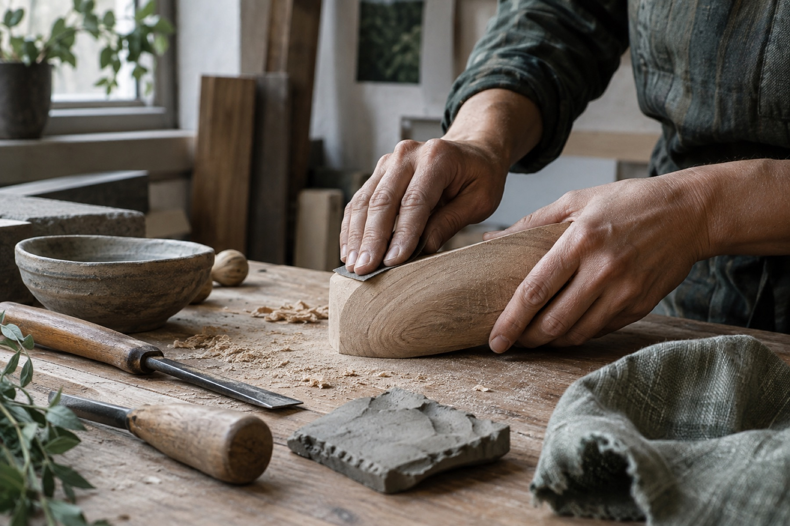

Objects and materials used in personal and household routines.
Independent curated marketplace
Better living starts with a better way to choose.
Arvena connects real needs with carefully understood products, technologies, systems and services.
How the marketplace is organised
From a need to a working result
Arvena keeps four different questions separate so that a useful idea is not mistaken for a suitable product or a complete implementation.
- NeedWhat do you want to improve?
A practical condition such as cleaner drinking water, healthier indoor air or lower resource use.
- Solution classWhich approach could address it?
A technology, method or service type explained independently of a particular brand.
- Specific offerWhich exact option is worth considering?
A researched product, service or system with its provider, evidence, strengths and limits made visible.
- ImplementationWhat makes the intended result possible?
Installation, professional input, maintenance and local conditions can matter as much as the object itself.
Solution areas
Start with the part of life you want to improve
Clean Water is published now. The wider domain structure shows where Arvena is developing, without presenting future inventory as available today.
A marketplace across scales
From one everyday object to the systems around a home
Arvena is designed to cover individual products, professional services, building technologies and integrated solutions. Each scale requires different evidence and a different route to implementation.
Equipment, installation and maintenance considered together.
Several compatible products, services and specialists working toward one result.
Marketplace discovery
Explore what Arvena has actually published
Search across current guides and solution classes. Specific offers and providers appear only after an exact publication package is ready.
Published records are loading.
Filters use current public data only.
No matching published material
Try a broader search or clear the filters
Arvena does not create placeholder listings to make the catalogue appear larger.
Guided by needs
Solution areas connect everyday questions with practical approaches
Choose an area by the improvement you seek. Each area can contain educational guides, solution classes, specific offers and implementation knowledge at different stages of development.
Browse the full solution-area structure
A developing area is part of Arvena's approved scope, but it has no published discovery record yet.
Developing areas
Visible before they are populated, clearly marked until they are ready
Published solution area | Water
Cleaner drinking water at home
Choosing household water treatment without first defining the water-quality concern or checking product-specific claims.
Decision path
From uncertainty to a maintainable setup
Solution approaches
Compare methods before models
Performance is product-specific and claim-specific. A technology name alone does not establish what a particular device reduces.
Safety boundary
Local conditions remain decisive
During an advisory, emergency or uncertainty about drinking-water safety, follow the responsible local authority or a qualified professional. Arvena's educational material is not diagnosis or medical treatment.
Solution class | Point of use
Point-of-use drinking-water filtration
A household drinking-water filter selected by the contaminants it is independently certified to reduce, not by a generic purification promise.
This explains an approach
It is not a product listing, provider endorsement or complete implementation package.
Problem addressed
Where this approach may fit
A defined drinking-water concern at one kitchen tap.
Why it is included
Specific claims can be inspected
A point-of-use system keeps the decision focused on drinking and cooking water. Certification and a performance data sheet make specific reduction claims inspectable, while a local water report keeps the choice tied to an actual need.
Evidence and basis
What supports this explanation
Limitations
What this profile does not establish
Implementation
The device is only part of the result
- Match the certified reduction claims to current local water information.
- Check installation constraints, flow, capacity and any waste water.
- Replace cartridges on schedule and follow the exact manufacturer's instructions.
Specific offers
Exact products and services belong here only when their publication record is ready
A solution class can explain a useful approach without implying that Arvena has selected a particular model, installer or seller.
0published specific offers
No specific offer is currently published
Arvena will not use fictional products, generic placeholders or unverified claims to populate this marketplace.
Reusable offer profile
What a published offer can make clear
Optional sections appear only when relevant and supported. Unknown price or availability remains visibly unknown.
- Identity and provider
- The exact product, service or system and the organisation behind it.
- Suitability
- The need addressed, suitable contexts and required implementation.
- Selection basis
- Why Arvena selected it, with claims tied to their evidence sources.
- Practical reality
- Specifications, materials, safety, maintenance, lifetime, geography and access.
- Boundaries
- Limitations, alternatives, unknowns and distinctions between producer statements and editorial conclusions.
- Trust record
- Commercial disclosure, latest review date and a route for corrections.
- Account actions
- Saving and controlled discussion appear only when the required account and contribution permissions are operating.
Providers
The people and organisations behind an offer need their own clear record
A provider profile can explain who makes, supplies, installs or supports an offer. Independent research does not make a provider an Arvena partner.
0published provider profiles
No provider profile is currently published
A profile will appear only with a real identity, relevant offer context and an explicit cooperation status.
Relationship clarity
Research, publication and cooperation are different states
Independently researched
Arvena may assess public information about an offer without contact or a commercial relationship.
Published provider
A factual provider record may accompany a published offer. Publication alone does not mean partnership.
Approved association
If formal cooperation is established later, its scope and commercial context must be stated explicitly.
Integrated solutions
A good outcome often depends on more than one product
Integrated solution pages can show how products, services, specialists, installation and ongoing care fit together, while keeping responsibility and availability precise.
Illustrative combination only
A household drinking-water setup
This educational composition is not a purchasable package and is not coordinated or guaranteed by Arvena.
- Understand the water
Utility information or appropriate testing defines the concern.
- Select the treatment approach
The solution class is matched to the actual need.
- Choose and install an exact system
Product claims, local availability and competent installation are checked.
- Maintain the result
Consumables, servicing and reassessment continue after installation.
Availability language
Three statuses must never be confused
Conceptual combination
An editorial explanation of how compatible elements could fit together. It is not an offer.
Third-party package
A package available from an identified external provider, when independently checked and clearly disclosed.
Arvena-coordinated implementation
A future possibility. Arvena does not currently claim to operate or guarantee complete implementation packages.
How Arvena selects
Curation should make a decision more understandable, not merely more persuasive
Arvena supports its marketplace with claim-level research, transparent limitations and clear distinctions between evidence, producer statements and editorial conclusions.
The publication path
- Define the need and context
Selection begins with the intended improvement, location, user and implementation conditions.
- Set criteria for the offer type
A water filter, cleaning product, specialist service and building system cannot share one universal checklist.
- Check claims at the right level
A broad technology principle does not prove an exact model claim. Evidence is attached to the claim it can support.
- Compare practical strengths and limits
Safety, materials, maintenance, durability, environmental considerations, alternatives and uncertainty remain visible.
- Publish access and disclosure honestly
Price, geography, availability and commercial relationships are stated only when known and current.
- Review and correct
Material changes, new evidence and credible corrections can narrow, update or remove a conclusion.
Evidence in context
Different sources do different work
- Independent research
- Peer-reviewed work, accountable public guidance or independent technical material relevant to a defined claim.
- External standards and testing
- A recognised framework or result checked for the exact scope, model and claim it covers.
- Producer statement
- Information from the maker or provider, clearly attributed and not automatically treated as an independent conclusion.
- User experience
- Useful practical context when clearly identified. Popularity and comments are not evidence of safety or performance.
- Arvena editorial assessment
- An independent interpretation of the available evidence, uncertainties and tradeoffs. It is not a certification.
Uncertainty
Unknown is a valid publication state
Missing price, incomplete availability or a material evidence gap should be shown plainly. A recommendation can be narrowed or paused when the evidence does not support a broader conclusion.
Corrections
Substantive changes return to editorial review
Providers, specialists and readers may identify an error or changed fact. A correction is checked before public claims are updated.
See the current contact status
Craft, local production and conscious sourcing
The story of how something is made matters. It still needs to be examined.
Arvena can give stronger visibility to makers, places, materials and processes while applying the same discipline used for any other offer.
A richer profile can look beyond the finished object
- Maker
- Who makes it, what expertise is involved and who is accountable for the claims.
- Place
- Where materials, production and repair happen, stated at the level that can be verified.
- Material
- Composition, relevant safety, origin, finishes and what remains unknown.
- Process
- How it is made, maintained and repaired, without turning process language into proof of quality.
- Durability
- Expected use, care, replacement parts and practical lifetime where credible information exists.
- Responsible sourcing
- Environmental and social claims assessed specifically rather than inferred from a label or aesthetic.
Selected offers
No craft or local-production offer is published yet
This editorial area is ready for real research packages. It will remain an honest developing state until then.
About Arvena
A marketplace for better choices across everyday life and the systems that support it
Arvena is an independent curated marketplace for high-quality products, technologies, integrated solutions and related services that support healthier, cleaner, more ecological, higher-quality and more thoughtfully organised living.
Marketplace first
Arvena exists to help people discover, understand and access useful real-world offers. Research and evaluation support that marketplace. They are not a separate purpose that replaces it.
Selection becomes more useful when the need, the approach, the exact offer and the implementation remain distinct.
Working principles
What should remain true as Arvena grows
Independent judgment
Selection should not become pay-to-play. Commercial relationships must be visible and separate from editorial conclusions.
Evidence with context
Evidence is attached to the claim it can support, with limitations and uncertainty kept readable.
Practical usefulness
A good option must make sense in real use, including access, installation, maintenance and local conditions.
Ecology without vague claims
Environmental considerations are specific, proportional and balanced against safety, durability and the intended result.
Breadth with discipline
Arvena can span simple products and complex systems without pretending every area already has inventory.
Development, research and accessibility
A wider capacity can grow around the marketplace, but it is not operating yet
Arvena's current work is public marketplace structure and careful editorial publication. The directions below describe future possibilities, not services available today.
Current
What exists in this phase
- A public marketplace architecture organised by needs and solution classes.
- Editorial explanations with claim-level sources, limitations and disclosure.
- An initial Clean Water knowledge path and reusable publication structure.
Future direction
What may be developed later
- Deeper research capacity and a formal Arvena Verified methodology.
- Support for useful producers, developers and new product development.
- Closer coordination of products, specialists and implementation.
- A development and accessibility funding mechanism for selected essentials.
Future accessibility ambition
Support could help close an affordability gap
A future mechanism could support useful creators and help selected essential solutions reach people without profit, at cost or below cost where funding covers the difference.
There is no operational fund, subsidy programme or guaranteed reduced pricing today.Participate
Arvena can grow through relevant products, practical expertise and careful collaboration
Participation begins with fit and evidence. No public application backend or open discussion system is currently enabled.
Offer knowledge
For producers and specialists
Understand what Arvena needs to assess an offer, clarify claims or represent specialist knowledge responsibly.
Read participation guidanceBuild with care
Work with Arvena
See the kinds of editorial, research, technical and implementation experience that may become relevant as the platform develops.
See areas of contributionFor producers and specialists
Useful information makes a serious assessment possible
Arvena may research an offer independently or receive information from its producer. Contact, publication and commercial cooperation remain separate decisions.
Information that supports review
There is no live submission form yet. This checklist describes the material a future review route may request.
- The exact offer identity, version and provider.
- The need addressed and intended context of use.
- Specific performance, material and safety claims.
- Sources, test documents or standards relevant to each claim.
- Known limitations, exclusions and maintenance needs.
- Current geography, availability and verified pricing where applicable.
- Media-use permission and commercial relationship information.
- A responsible route for factual corrections and updates.
Publication is editorial
A reply, free sample or commercial agreement is not a universal publication gate. Material evidence gaps can narrow or pause a recommendation.
Partnership is explicit
A researched or published provider is not automatically an Arvena partner. Any association and its scope must be stated clearly.
Work with Arvena
Building a trustworthy marketplace calls for several kinds of judgment
Arvena is not publishing vacancies, paid commissions or an open application programme on this site today. These areas describe experience that may become relevant.
Potential fields of contribution
Research and evidence
Claim-level source review, standards interpretation and careful handling of uncertainty.
Editorial and product knowledge
Clear explanations that distinguish needs, solution classes, offers and implementation.
Specialist practice
Practical expertise in water, indoor environments, food systems, materials, energy, growing or buildings.
Responsible production
Deep knowledge of materials, making, maintenance, durability and accountable sourcing.
Technology and access
Building useful discovery, private user tools and secure provider capabilities without weakening trust.
Current status
No active opportunity or application form is published
When a genuine route exists, Arvena can state its scope, terms and response expectations here. Until then, the page remains informational.
See contact and trust informationContact
A verified public contact channel is not yet published
There is currently no public email address, contact form or application intake on this site. Arvena will publish a real route here when messages can be received and handled responsibly.
No message is sent from this page
This honest state avoids suggesting that an enquiry, correction or application has been submitted.
Clean Water sourcing
Clean Water sourcing is not currently open
The educational guide and solution-class profile remain available, but this request form is disabled and will not send information.
If requests open later
Only minimal contact and request context will be collected. Medical details should not be included.
Confirmed result
Your request was recorded
The Arvena database accepted the request. Keep the reference below if you need to follow up.
ReferenceNot available
Page not found
This path is not available
Return to the marketplace or browse the complete solution-area structure.